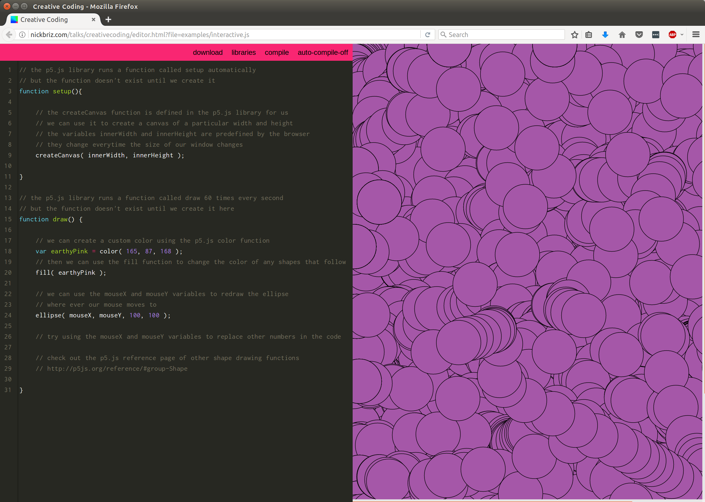

Why should I care?
- Literacy
- Contemporenaity
- Practical Magic
Literacy allows us to interpret and engage with culture in meaningful ways. Without it, we can't make informed contributions to our socieites. As the proliferation of culture is increasingly mediated and produced through digital and networked media, we must take it upon ourselves to better understand these systems.
Contemporary culture is digital culture. Invest in making contributions that are relevant right now. The world is sculptable. We live in a drammatically maluable and fast moving society. The general purpose computer is today's most powerful and disruptive tool. The internet represents our first chance, as a species, to communicate and collaborate with everyone (not yet, but maybe soon). We should use today's tools to produce something that is relevant now and know that doing so may have enfluence for generations to come.
The idea that the written word can be used to enact measurable and real change over the physical world has for thousands of years been the domain of shamans, wizards, and the heavenly. This is actually how the world works now.
Why Processing/P5.js?
P5.js is has evolved out of Processing, perhaps the most important toolkit geared towards teaching artist to program. For nearly 15 years Processing "has promoted software literacy, particularly within the visual arts, and visual literacy within technology". During that time artists from all over the world have been using it to make brilliant new works of interactive and generative art.
During the summer of 2014, Lauren McCarthy and a community of enthused artists and programmers began working on P5.js, a version of Processing that was written in JavaScript, the scripting language of the web. JavaScript as a language has undergone a recent renaissance and has strongly positioned itself as one of todays most popular and flexible languages. Using P5.js also means that we can host and share the sketches that we make on the web.

Disclaimer, this is going to be hard.
Programming, it turns out, is hard. The fundamental rules are typically simple and clear. But programs built on top of these rules tend to become complex [...] A computer is a machine built to act as a host for these immaterial machines [programs]. Computers themselves can do only stupidly straightforward things. The reason they are so useful is that they do these things at an incredibly high speed. A program can ingeniously combine an enormous number of these simple actions in order to do very complicated things
-- from Marijn Haverbeke's introduction to Eloquent JavaScript, a Modern Introduction to Programming (2015)
Getting Started
For a great intro to P5.js, hop on over to the Get Started section on the P5.js website.
To write code, we need a code editor. We will be using Nick Briz's awesome online javascript editor, but there is no reason we can't use any other text editor. Sublime Text and Atom are some of the most popular.
Before we move on, I want to stress the use of two resources above all else when learning to use P5.js. This reference page and these examples will be invaluable to you as find your way on the wonderful journey that is learning to PROGRAM! Not only is it advised, but expected that you will rely on the reference throughout the rest of your programming days, not only while you are learning. Even the best and most experienced of programmers generally have trouble writing code without an internet connection they can rely on to look stuff up.
Examples
Click each sketch to view the source code. Descriptions below.
- Demonstrates basic drawing of shapes on screen.
- Advanced drawing by combining simple shapes into a larger composition.
- Introduce randomness and generative patterns.
- Introduce the sin function, using it to control the y-position of circles in the sketch.
Last Year's Examples
I've also included the example sketches from last year's lecture. They are inspired by the work of artistJosef Albers. Click on one to view it in fullscreen. Descriptions of each sketch lies below.
- Demonstrates basic drawing of shapes to the screen.
- Adds dynamic behavior to the sketch by controlling the size of rectangles by a sine wave function.
- Introduces a hue shift behavior to the previous sketch.
- Displays the relationship created by using sine waves at different frequencies to control the y-position of rectangles.
- Illustrates the usage of Blend Modes in P5.js.
- This advanced example uses a frame-differencing algorithm processed on input from an attached webcam to detect how much motion is present in the frame and use it to control the rotation speed of the shapes.
Resources
Below are a list of resources that will be invaluable to you as you learn to program.
- Weekly JavaScript Meetup Materials: A few years ago I lead a weekly meetup to help students learn JavaScript. Click on the "basic" folder link to for a JavaScript intro that goes over most of the basics of JavaScript.
- Nick's JavaScript Basix: Nick Briz (teaches at SAIC in the FVNMA dept.) has some amazing online course materials. His JavaScript intro is one of the best.
- The Processing Forum: Processing has a wonderful and thriving community that are always happy to help answer questions. I've linked to the P5.js section of the forum.
- Stack Overflow: This is by far the most active programming forum on the web. Chances are if you are having a problem someone else already has asked a question (and received an answer) about it.
- The Source Code for this website. Dig into the examples!
- Me: Feel free to shoot me an email :). I'll do my best to get back to you.
Copyleft
All original materials featured on this site are released to the public domain. Share, use, and remix as you please. <3 Brannon.